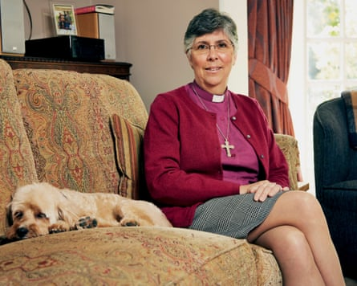
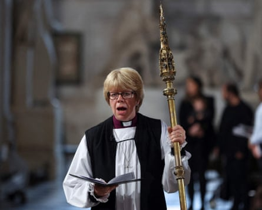

I n the bars and cafes of the University of York’s campus, talk among the 500 members of the Church of England’s parliament over the next few days is likely to be dominated by one issue: who will be the next archbishop of Canterbury?
The General Synod is meeting eight months after Justin Welby dramatically quit over the way he handled one of the C of E’s worst abuse cases , and as the opaque process of replacing him slowly grinds on.
In contrast to the 17 days it took the Roman Catholic church to choose a new pope , the C of E is expected to take almost a year to appoint a new archbishop. The Crown Nominations Commission (CNC), the 17-strong body that will nominate Welby’s successor, is due to meet for a second time this month. A third meeting will take place in September, after which a name will be submitted to Downing Street and then finally to King Charles for approval.
Meanwhile, many C of E faithful are asking not just who is capable of leading this splintered and declining institution, but who would even want such a poisoned chalice?
Guli Francis-Dehqani is the bookies’ favourite to be the next archbishop of Canterbury.Photograph: Chris McAndrew/Camera Press
“It’s hard to see why anyone would be up for such an impossible job,” said one suffragan (junior) bishop. “It’s increasingly challenging even to find good clergy willing to become suffragan bishops, and I know several who are thinking about leaving. It feels a long way from what most of us came into the church to do.”
The CNC for the Canterbury vacancy comprises the archbishop of York, the bishop of Norwich, three priests and three lay members from the General Synod, three members of the Canterbury diocese, and – for the first time – five representatives of the global Anglican church. It is chaired by Jonathan Evans, a former MI5 chief. The elections for the Canterbury representatives had to be run three times – apparently due to cock-ups but fuelling conspiracy theories about attempts by liberals to rig the outcome.
A public consultation on the role earlier this year produced more than 11,000 responses, many suggesting a woman be appointed for the first time. In an interview with the Church Times last week, Lord Evans said: “There is no reason why a woman should not be appointed, but whether a woman will be appointed is another question.”
A first female archbishop would allow the C of E to claim a historic and radical move, but it would not please everyone. Hundreds of parish churches still refuse to accept women as priests, let alone as an archbishop, and a female leader of the global Anglican church would be resisted by those in more conservative parts of the world.
The issue of same-sex marriage is even more incendiary. The C of E has seen bitter divisions over this issue for many years, with little sign of a way forward that will be accepted by traditionalists and progressives.
Conservative evangelicals claim that any candidate who signed a letter in November 2023 supporting official church blessings for same-sex couples is “dead in the water”, as one put it. The 44 signatories include Guli Francis-Dehqani, the bookies’ favourite to be the next archbishop of Canterbury.
The requirement for the successful candidate to win the support of two-thirds of CNC members means opponents of same-sex blessings could veto anyone who has spoken publicly in favour. In the past few years, several bishop appointment processes have become deadlocked in a standoff between conservatives and liberals, leaving positions unfilled.
Many believe the job of archbishop of Canterbury has become impossible. He or she must offer spiritual leadership to a country that often is not interested in hearing their message, sit and debate in the House of Lords, manage and run the C of E, whose 42 dioceses fiercely guard their independence, officiate at state occasions, and try to hold together disparate and often warring factions within the national and global churches.
In theory, an archbishop can be any ordained priest, but is likely to be a senior bishop with about a decade to go before the compulsory retirement age of 70.
The CNC was also seeking someone who could “take the appropriate lead on safeguarding”, said Evans.
Sarah Mullally, the bishop of London, could be installed as a short-term safe pair of hands.Photograph: Paul Childs/AFP/Getty Images
The latter could be a stumbling block for some. As the C of E struggles to get a grip on its long, dark history of abuse and cover-up, potential candidates accused of mishandling allegations could be ruled out as too high a risk, especially after Welby’s downfall. Martyn Snow, the bishop of Leicester and once a favourite for the top job, may be in that position after a BBC investigation into a stalking case and his response to the initial allegations. The BBC reported that he later apologised to the victim.
At the moment, the bookies’ favourites are Francis-Dehqani, the bishop of Chelmsford who has a compelling backstory as a child refugee from Iran; Sarah Mullally, the capable bishop of London and a former NHS chief nursing officer, who could be installed as a short-term safe pair of hands; and Michael Beasley, the bishop of Bath and Wells, who has navigated a careful path between progressives and traditionalists on blessings for same-sex couples.
Whoever makes it through the long selection process may find commanding the confidence of clergy, congregations and the wider public a challenge. “I believe in God, but I don’t particularly believe in the Church of England, and I certainly don’t believe in the current crop of bishops,” said one synod member. “We need someone with moral courage, and I have no confidence that’s what we’ll get.”